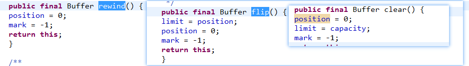

1Buffer
- Buffer是NIO中的顶层类；
java为7种基本类型(除了Boolean)定义了 对应的Buffer类，这些类基本相同。 主要的操作就是get和put; 类库中提供的这7种类都是抽象类，其实现在nio包内(包访问权限)； 一般使用allocate即可创建对应的Buffer;
ByteBuffer 比较特殊； 像其余的6种类型，创建Buffer时都只能在堆中创建(JVM管理)， 但是ByteBuffer 还可以直接在内存中创建(JVM没有权限管理)即直接内存。
MappedByteBuffer 此类就是一种直接内存类， 用来NIO中的文件映射。 一般来说执行read读取文件时，调用内核后，OS会将磁盘中的文件读取到内核空间内存中， 然后再copy到用户空间内存JVM，最后程序便可以使用该文件； NIO利用直接内存，省去了内核到用户内存的拷贝过程，二者读写都是基于此内存操作， 所以比较高效。
ReadOnly： 有的缓冲区是只读的，此时调用put就会抛出异常；isReadOnly判断是否只读；
- 功能：
该类作为超类，Buffer提供的也就是缓冲区作用。基本的操作就是get和put； 只是子类对于不同的数据类型有不同的扩展；
主要变量：
- position： 指示当前缓冲区 读写指针的位置；
- limit： 表示读写的界限；
- capacity： 底层缓冲区容量；
- mark： 标记，和旧IO中一样含义，标记此位置，然后可以调用reset将position回退到此位置；
- address： 此不常见,只是用于直接缓冲区，表示直接内存的起始位置； mark <= position <= limit <= capacity
关于读写
- Buffer作为顶层类，并没有定义put get这些抽象方法.(但是子类都是通过这两个函数读写)
- 对于读写必然会检查以上几个变量边界等，该类定义了3中边界异常：BufferOverflowException，BufferUnderflowException 和IndexOutOfBoundsException(前两个一般是调用get() put()时的异常上下溢出，最后一个是get(i) put(i) 对指定位置操作异常；)；
函数 
- clear(): 一般将要填充缓冲区时调用该函数，将position置为0 limit置为容量， 也就是开辟一些空间来写入数据；
- flip(): 相反在读取缓冲区前调用，例如当调用put写入些数据后，position指向最后写入的数据，此时调用flip 将limit限制在此处，pos归0 便可以安全读取；
- rewind(): 和clear() 类似，只是此处假定已经适当设置了limit;
这些函数主要就是操作 limit 和pos 变量； 关于 mark等也有相关方法；
2 ByteBuffer
主要功能：(api)
- 单个字节的读写即： get和put函数；
- 批量字节的读写； byte[] 参数
- 别的类型的读写。 getInt等； CharBuffer等6种类型中都只有操作自己指定类型的get函数。(ByteBuffer底层操作字节，不同类型读写也就是 多读几个字节然后组合 涉及到大小端不同顺序)；
- 视图缓冲区；也是ByteBuffer特有， 主要是asIntBuffer()等函数，其实也就是对将该ByteBuffer包装为其余类型，底层使用的数组还是相同的，只是postion limit等变量时独立的；
变量：
- byte[] hb： 该变量指向我们底层分配的数组，但是ByteBuffer 当作为直接内存时该变量不再使用，而是直接使用buffer中的address 直接指向内存地址；
- offset： Buffer中定义的许多变量，都是相对的，也就是pos=0 并不代表指向hb[0]指向的是hb[offset+0];
主要方法：
- allocate(): 创建指定长度的Buffer. ByteBuffer有直接缓冲区和非直接缓冲区。 而其余Buffrt只有非直接；
- wrap(): 也能创建。只是使用自己提供的byte[];
** compacting、duplicating 和 slicing**
compact: 压缩缓冲区，也就是将pos-limit这些元素向前移动pos个单位；pos设置为这些左边元素的下一个位置(也就是复制元素的个数)，limit设置为capacity； 场景： 比如有limit个元素等待读取，但是现在只读取到pos个，我们就可以调用compact将已经读取的元素释放，然后继续写入。
duplicate: 就是简单地复制当前Buffer,相当于视图， 因为底层还是使用相同的数据，只是pos等变量独立。是否直接内存，只读等还是和 原来Buffer一样；
asReadOnlyBuffer： 和duplicate一样也是返回一个视图，只是该Buffer只读
slice: 底层还是基于原始数组，只是切分其中一段作为缓冲区(pos-limit位置)； 此缓冲区视图将pos-limit位置作为新的缓冲区，pos设置为0， 修改offset即可；(这些变量都是相对位置，通过offset很好选择)； http://blog.csdn.net/aiwuzhi12/article/details/60319642
字节序：
由于该类底层字节数组，但是操作时提供各种类型的put get 所以必然涉及到字节序；ByteOrder类可以获取当前系统的字节序。 默认大端， 可以调用order()修改字节序；
2.1 DirectByteBuffer
直接缓冲区： 此类在创建时调用unsafe直接在内存中分配，并不是在JVM堆中，所以不受GC控制；在get put等操作也都是调用unsafe方法直接操作内存；
创建方法： 1. ByteBuffer中创建； 2. FileChannel中map方法，将一个文件映射为直接内存；
2.2 HeapByteBuffer
非直接缓冲区： 创建时就是使用new关键字申请内存，底层也就是JVM堆中的数组。 在get put等操作中使用数组的索引操作即可；
2.3 总结：
此部分类库，不涉及线程安全，实现基本一致。